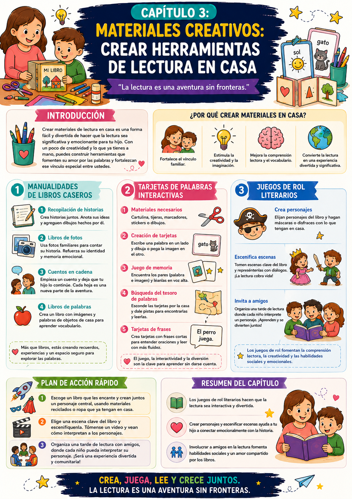

¿Te sentiste alguna vez abrumada por la idea de enseñar a leer con lo que tenés en casa? La buena noticia es que no necesitás materiales especiales ni ser experta en manualidades. Con un poco de creatividad y lo que ya tenés, podés crear herramientas de lectura poderosas y personalizadas.
Desde libros caseros con las historias de tu hijo hasta tarjetas interactivas y juegos de rol literarios — este capítulo te muestra que los mejores materiales de lectura no se compran, se crean juntos.
Libros caseros
Historias inventadas por él, fotos familiares, cuentos en cadena — libros únicos que ninguna librería tiene.
Tarjetas interactivas
Palabras + imágenes, juego de memoria, búsqueda del tesoro, frases cortas — versátiles y fáciles de hacer.
Juegos de rol literarios
Actuar los personajes de un cuento. Lo que se vive desde adentro se recuerda para siempre.
Por qué los materiales caseros son tan poderosos
Cuando el chico crea su propio libro o sus propias tarjetas, la lectura deja de ser algo que viene de afuera y se convierte en algo suyo. Esa apropiación es lo que construye el amor duradero por los libros.
✅ Antes de arrancar

Tuki te dice:
No se trata de la perfección — se trata del proceso. Un libro casero imperfecto hecho con amor vale más que cien libros perfectos que nadie abrió.
Para entender por qué crear los propios materiales funciona tan bien, veamos qué pasa cuando el chico es autor y no solo lector.
De lector a autor
Apropiación · Identidad lectora · Motivación
Cuando el chico crea su propio libro, pasa de ser consumidor a ser productor de historias. Ese cambio de rol tiene un impacto enorme en cómo se relaciona con la lectura.
El autor de un texto lo relee con una motivación completamente diferente al que lo recibió de afuera. Y esa relectura — voluntaria, entusiasta — es exactamente el tipo de práctica que consolida las habilidades lectoras.
Lo que dice la investigación
Los chicos que crean sus propios textos desarrollan habilidades de comprensión lectora más sólidas que los que solo leen textos ajenos. Escribir para que otro lea obliga a pensar en la claridad y la estructura.
El rol literario como experiencia vivencial
Actuar + leer = recordar
Cuando el chico actúa un personaje de un cuento, lo vive desde adentro. Esa experiencia vivencial crea memorias mucho más fuertes que la lectura pasiva — y con esas memorias, los detalles de la historia quedan grabados de forma duradera.
- 1El juego de rol activa el cuerpo, las emociones y la imaginación al mismo tiempo — tres sistemas de memoria en paralelo.
- 2Actuar obliga a entender la motivación del personaje — y eso es comprensión lectora profunda.
- 3La emoción de la actuación crea un recuerdo positivo asociado a esa historia y, por extensión, a la lectura.
Tuki te dice:
Los materiales que crea el chico son los que más va a querer usar. Lo que es suyo, lo cuida, lo relée, lo comparte.
Tres estrategias para crear materiales de lectura en casa — libros caseros, tarjetas interactivas y juegos de rol literarios.
Libros caseros
Historias propias · Fotos · Cuentos en cadena
Hacer libros caseros es una de las formas más poderosas de conectar a tu hijo con la lectura. Cada libro que crean juntos es único — ninguna librería lo tiene.
- 1Recopilación de historias: pedile que te cuente una historia. Anotá sus palabras tal como las dice, transcribílas en hojas y que él las ilustre. La imperfección es parte del encanto.
- 2Libro de fotos: usá fotos familiares y creá un libro que relate la historia de su vida. Texto sencillo debajo de cada foto. Refuerza la lectura y la identidad al mismo tiempo.
- 3Cuentos en cadena: vos escribís una frase, él agrega la siguiente. Se turnan hasta completar la historia. Encuadernan las hojas — tienen su propio libro.
- 4Libro de palabras: imágenes de objetos de la casa con el nombre al lado. Visual, tangible, personalizado — ideal para lectores iniciales.
Guardá todos los libros que hagan
Con el tiempo, arman su propia "biblioteca de historias inventadas". Ver cuánto creció esa biblioteca es uno de los motivadores más poderosos que existen.
Tarjetas de palabras interactivas
Versátiles · Fáciles de hacer · Múltiples usos
Las tarjetas son la herramienta más versátil que podés crear. Se pueden usar de diez formas diferentes y duran mucho.
- 1Materiales: cartulina cortada en rectángulos, marcadores, tijeras. Opcional: stickers o dibujos.
- 2Creación básica: en un lado la palabra, en el otro un dibujo o imagen. Empezá con 10-15 palabras que esté aprendiendo.
- 3Juego de memoria: todas las tarjetas boca abajo. Se turnan dando vuelta dos — si hacen pareja, leen la palabra en voz alta y la guardan.
- 4Búsqueda del tesoro: escondé las tarjetas por la casa — que las encuentre y lea cada una antes de guardarla.
- 5Tarjetas de frases: cuando ya maneja las palabras, pasá a frases cortas de sus cuentos favoritos. Eso trabaja la fluidez lectora.
Juegos de rol literarios
Actuar los personajes · Teatro en casa
Los juegos de rol convierten la lectura en una experiencia vivencial. No se trata de leer el cuento — se trata de vivirlo.
- 1Elegí el cuento: uno que ya conozca bien — la familiaridad con la historia libera energía para la actuación.
- 2Creá personajes con lo que tengan: una toalla como capa, un palo de escoba como espada, una máscara de cartón — improvisar el disfraz es parte del proceso creativo.
- 3Escenificá escenas clave: tomá los pasajes más dramáticos o divertidos y actuenlos. Con diálogo, con movimiento, con expresión.
- 4Involucrá a otros: si hay hermanos, amigos o abuelos cerca — que cada uno tome un personaje. La lectura se convierte en una actividad social enriquecedora.
- 5Grabá un video: verlo después es muy motivador — y crea un recuerdo divertido asociado a esa historia.
Plan de acción rápido
Escogé un libro que le encante. Creá juntos un personaje central usando materiales reciclados. Elegí una escena clave y escenifícala. Tomá un video y véanlo juntos — eso lo va a querer repetir.
Tuki te dice:
Lo que el chico crea con sus manos lo recuerda con su corazón. Los materiales caseros son memorias, no solo herramientas.
Tres acciones concretas para arrancar esta semana — el primer libro casero, las tarjetas interactivas y el juego de rol.
Acción 1 — Primer libro casero
Sentate con tu hijo y pedile que te cuente una historia. Anotá sus palabras, transcribílas en hojas dobladas. Él ilustra cada página. Abrochen o cosé las hojas — tienen su primer libro. Leánlo juntos en voz alta.
Acción 2 — Set de tarjetas interactivas
Cortá 15 rectángulos de cartulina. En 8 de ellos escribí palabras que esté aprendiendo. En los otros 7, dibujá o pegá imágenes de esas palabras. Jugá al Memory clásico — cada par encontrado se lee en voz alta.
Acción 3 — Primera sesión de rol literario
Elegí un cuento que ya conozca. Improvisá los disfraces con lo que tengan en casa. Elegí una escena y actuenla juntos con voces y expresión. Grabá un video corto. Véanlo juntos al terminar.
- 1Buscar la perfección: el primer libro casero va a ser imperfecto — y eso está perfecto. Lo que importa es el proceso de creación, no el resultado.
- 2No guardar lo que crean: tirar los materiales que hicieron juntos es desperdiciar motivación. Guardá todo — tienen valor sentimental y pedagógico.
- 3Corregir durante la actuación: en el juego de rol, lo importante es la experiencia. Las correcciones interrumpen el flujo — guardálas para después.
- 4Comprar en lugar de crear: los materiales comprados son perfectos pero ajenos. Los caseros son imperfectos pero propios — y esa diferencia es enorme.
- 5Hacerlo solo una vez: la primera vez siempre es rara. La segunda es mejor. La tercera ya es un ritual. La constancia es lo que construye el hábito.
Tuki te dice:
¡Ya falta poco! En el último capítulo del bono vemos cómo llevar la lectura al aire libre — cuentos bajo los árboles, diarios de naturaleza y exploraciones literarias.
Esta infografía resume cómo crear materiales de lectura en casa — libros, tarjetas y juegos de rol.

Infografía · Bono 3 Cap 3 — Materiales Creativos
Tuki te dice:
¡Casi terminamos! En el Cap 4 vemos el cierre perfecto del bono — lectura al aire libre, cuentos bajo los árboles y diarios de naturaleza.